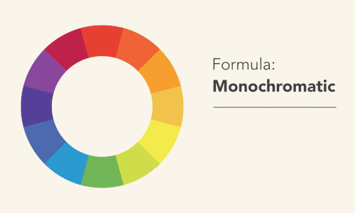
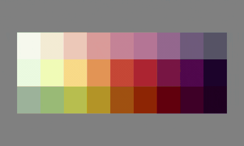

Circulo Cromático Interativo
Circulo cromático que permite construir paletas baseada na teoria da harmonia das cores de forma automática.
Paletas Personalizadas
O usuário poderá criar uma conta e salvar e gerenciar suas próprias paletas, que serão disponibilizadas em Cod. Hexadecimal, RGB, HSL.
Pré-visualização das paletas

O site disponibilizará um preview com sua paleta personalizada aplicada em uma interface de exemplo.